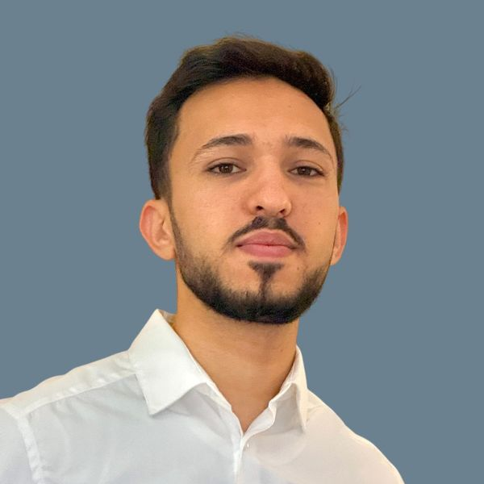

Hafsi Nadim
Du bus CAN aux salles de supervision : firmware, protocoles bas niveau et outils de test pour systèmes critiques — actuellement disponible pour une opportunité en CDI ou CDD.

Ingénieur qui parle firmware et supervision
Ingénieur diplômé d'un double-diplôme entre l'ISI Tunis et Sorbonne Paris Nord (Sup Galilée), spécialisé en systèmes embarqués et instrumentation. Aujourd'hui chez Siemens Mobility, il intervient sur la supervision ferroviaire du métro de Toulouse : migration de plateformes critiques (PCC/SPOCC) et développement d'outils de test pour les liaisons série entre postes de commande. Son parcours couvre aussi bien le bas niveau (STM32, bus CAN, appels système Unix/Linux) que l'instrumentation appliquée, du banc de test biomédical à la passerelle IoT industrielle.
Parcours
- Migration de la plateforme logicielle de supervision ferroviaire (PCC/SPOCC) de la voie d'essais du métro de Toulouse, de Windows XP vers Windows 10.
- Développement d'un simulateur de trames série BASC en Python (Tkinter, pyserial) pour tester la communication PCC ↔ C200 sur le métro de Toulouse.
- Conception d'un banc de test simulant la respiration humaine : régulation de température, génération de micro-gouttelettes et automatisation via ESP32.
- Conception d'une passerelle IoT pour la commande et la supervision de PLC — stack C, STM32, UART, Ladder, GSM/GPRS, Ethernet, SQL, PHP, HTML/CSS, LwIP.
- Réalisation de tests et diagnostics de composants et cartes électroniques.
Catalogue de projets
Contrôle des systèmes HVAC dans un train
Système de contrôle HVAC pour train avec Raspberry Pi, module Automation HATMINI et communication MQTT.
Passerelle CAN / Ethernet — architecture véhicule
Simulation d'une architecture de calculateurs automobiles : configuration bas niveau du STM32 (identifiants, filtres, interruptions, modes loopback/normal) et transmission vers Raspberry Pi via Ethernet/UDP (LWIP).
Interpréteur de commande Shell
Shell interpréteur développé en C sous Ubuntu : appels système, gestion de processus et parsing de commandes.
Stack technique
Langages
Cartes / Microcontrôleurs
Protocoles série avancés
Programmation système Unix/Linux
OS & middleware
Bases de données
Outils & méthodologies
Firmware & validation
Parcours académique
Certificats
- C embarqué — Udemy
- ARM Cortex-M Software Development
- Arm Cortex-M Processors Overview
- Programmation C++ — Coursera
- Azure Data Fundamentals
Langues
Construisons quelque chose ensemble.
Disponible pour une opportunité en CDI ou CDD en systèmes embarqués, supervision ferroviaire ou instrumentation — basé à Paris, ouvert à la mobilité.